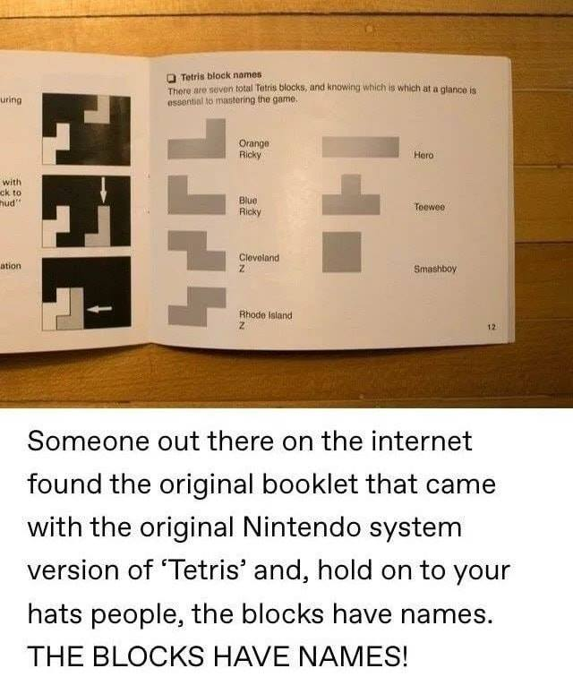

My Name Here
Checkpoint 1: Setting the Scene
Result image:

Specifications:
- Camera:
- Position: ( ?, ?, ? )
- LookAt: ( ?, ?, ? )
- Up: ( ?, ?, ? )
- Light::
- Position: ( ?, ?, ? )
- Color: ( ?, ?, ? )
- Larger sphere:
- Position: ( ?, ?, ? )
- Radius: ?
- Smaller sphere:
- Position: ( ?, ?, ? )
- Radius: ?
- Floor:
- Corners: ( ?, ?, ? ), ( ?, ?, ? ), ( ?, ?, ? ), ( ?, ?, ? )
An alternate view:
